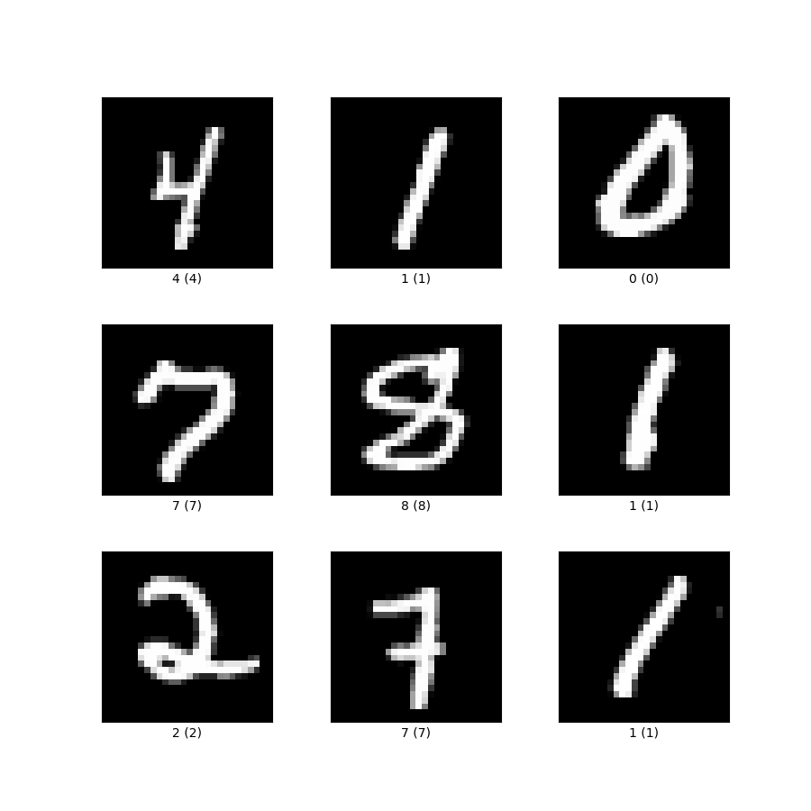
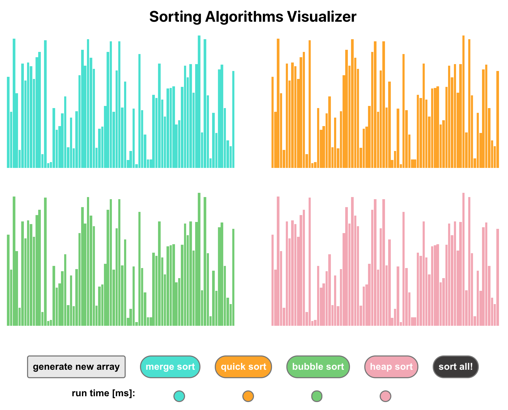
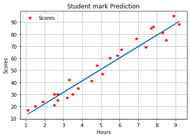
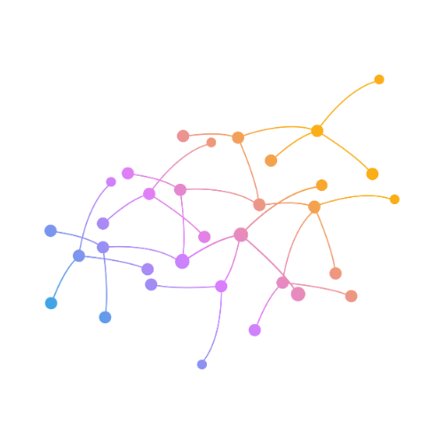

|
Nithin Akula
I am an undergraduate student who is interested in the general area of deep learning and neural networks. My
research interests include Computer Vision, Machine learning and NLP and LLMS.I am a Backend
developer with good knowledge of Django, logic, REST APIs and its implementations.
I spend most of time tinkering with new technologies and surfing the web. I'm currently working on neural networks and machine learning.
I am also a micro startup founder. I am currently working on a product called Mewnine which is a platform for converting machine learning models into APIs.
Besides research and programming, I enjoy writing, watching anime, playing ping-pong and video games.
Email /
CV /
GitHub /
LinkedIn
|
|
Projects and Research Work
|
|
IVYGRAD
(Python, Numpy)
Personal Project
• Ivygrad is a tiny scalar-valued autograd engine.
• It implements backpropagation (reverse-mode autodiff) over a dynamically built DAG and a small neural network library.
• With ReLU and Tanh activation function manually implemented.
• Inspired by micrograd and tinygrad this library lies between both of them :)
• It is a tiny library with only 200 lines of code.
|
|

|
MNIST CLASSIFIER
(Python, Numpy)
Personal Project
• A simple neural network to classify hand written digits using the MNIST dataset.
• The neural network is trained using the backpropagation algorithm.
• The neural network has been optimized and attained accuracy of 85.7% on the test set.
• Implemented using Numpy only, no external libraries such as Tensorflow are used.
|
|

|
ALGORITHM VISUALIZER
(Html, CSS, Js, React)
Personal Project
• A web application to visualize various algorithms such as sorting, etc.
• Implemented an interactive user interface with animations and color-coded visualizations.
• The application is responsive and can be used on mobile devices as well.
• The application is open source and can be found on my github.
|
|
|
FACE MASK DETECTOR
(Haarcascade, Python, OpenCV, Tkinter)
Personal Project
• A Gui application to detect a face mask.
• Implemented using OpenCV, and Haar cascade algorithms.
• Also have a capture image functionality.
|
|
|
BLOGO
(Python, Django)
Personal Project
• Developed a feature-rich Django blog application with user authentication, CRUD operations, and a responsive UI.
• The blog application provided a seamless platform for content creation, publication, and management, fostering communication, knowledge sharing, and community engagement..
|
|

|
STUDENT SCORE PREDICTOR
(Python, Numpy, SkLearn)
Personal Project
• A machine learning model used to predict a student’s performance based on the number of hours studied.
• Implemented using Numpy, Pandas and SkLearn.
• Simple Linear regression Algorithm.
|
|
|
MEW
(Html, CSS, Hugo)
Personal Project
• Created an academic blog platform using Django to provide a centralized repository for academic content, notes, and resources.
• The academic blog facilitated seamless information exchange, fostering a vibrant learning community and serving as a valuable resource hub for students and professionals in various academic disciplines.
|
|
 |
• Artificial Intelligence
• Deep Neural Networks
• Identification by Vision and NLP
|
|
{kind=link}